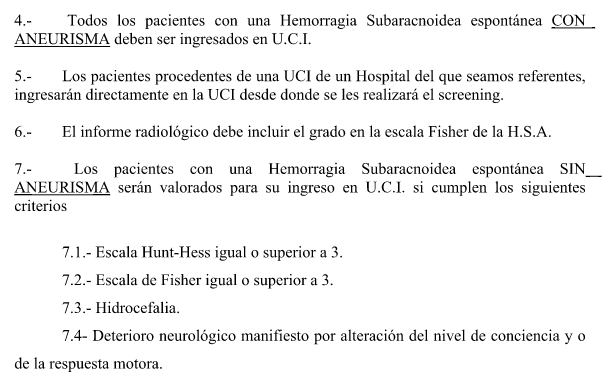

La hemorragia subaracnoidea (HSA) espontánea,
originada en un 80-85% por rotura de aneurisma, es una
emergencia neurológica crítica con alta morbimortalidad. El
objetivo del manejo en la Unidad de Ictus/UCI es estabilizar al
paciente y prevenir sus dos complicaciones más letales: el resangrado (complicación precoz) y el vasoespasmo/isquemia cerebral tardía
(complicación diferida).
¡! Nota: La mayoría de los pacientes con HSA (especialmente de alto grado) deben ingresar en UCI con experiencia neurocrítica; los grados leves o causas no aneurismáticas estables (ej. perimesencefálica) pueden vigilarse en la Unidad de Ictus.
¡! Nota: La mayoría de los pacientes con HSA (especialmente de alto grado) deben ingresar en UCI con experiencia neurocrítica; los grados leves o causas no aneurismáticas estables (ej. perimesencefálica) pueden vigilarse en la Unidad de Ictus.

Medidas generales y de soporte
- Posición y reposo: Mantener al paciente con la
cabecera de la cama a 30º, con estímulos limitados. El
reposo absoluto es obligatorio y su duración depende de la
causa:
- HSA aneurismática: hasta asegurar el aneurisma (clipaje o embolización endovascular, preferiblemente en las primeras 24 horas).
- HSA no aneurismática: hasta estabilidad del sangrado, generalmente 2–3 días.
- Tratamiento sintomático:
- Náuseas/vómitos: tratamiento antiemético agresivo para evitar maniobras de Valsalva que aumenten la PIC:
- ondansetrón: 4 mg IV en bolo lento (2–5
minutos), cada 6-8 horas.
- metoclopramida: 10 mg IV cada 8 horas.
- Analgesia: paracetamol 1 g/8h IV y/o dexketoprofeno 50 mg/8h IV (máximo 3 días). En cefalea refractaria, valorar tramadol 100 mg/8h IV o meperidina, asociando antieméticos. Evitar sedación profunda que enmascare el examen neurológico.
- Estreñimiento: lactulosa cada 24 h.
- Protección gástrica: profilaxis del ulcus por estrés con inhibidores de la bomba de protones (ej. pantoprazol 40 mg/24h IV).
- Profilaxis antiepiléptica: NO está indicado el uso
rutinario de fármacos anticrisis preventivos en pacientes
sin crisis. Solo es razonable en alto riesgo (ej.
aneurisma de ACM, hematoma intraparenquimatoso, infarto
cortical). Está formalmente
contraindicado el uso profiláctico de fenitoína,
ya que aumenta la morbimortalidad.
Manejo hemodinámico
- Presión arterial:
- Fase Pre-cierre del aneurisma: Evitar grandes fluctuaciones y picos hipertensivos para reducir el riesgo de resangrado. Utilizar fármacos de acción corta (ej. labetalol, urapidilo) para un descenso cuidadoso, evitando la hipotensión severa (PAM < 65 mmHg) que precipita isquemia.
- Fase Post-cierre con vasoespasmo: Se puede
permitir o inducir la elevación de la PA sistólica de
forma controlada para mantener la perfusión cerebral y
reducir la isquemia.
- Vasoespasmo: suele ocurrir entre el día 3 y 14.
- Nimodipino: Tratamiento pilar fundamental. Se debe administrar tempranamente Nimodipino 60 mg por vía oral o sonda enteral cada 4 horas durante 21 días. Suspender temporalmente o reducir dosis sólo si causa hipotensión o variabilidad significativa de la PA.
- Monitorización: Realizar Doppler transcraneal (DTC) periódico para detectar de forma precoz el incremento de velocidades indicativas de vasoespasmo.
- Fluidoterapia: A diferencia de la tradicional "Triple H", el objetivo actual es mantener la euvolemia (volumen de fluidos normal) para asegurar la presión de perfusión cerebral sin riesgo de resangrado. La solución de elección es el suero salino fisiológico (0.9%) u otra solución isotónica.
Prevención de eventos tromboembólicos
- Medidas físicas: Iniciar dispositivos de compresión neumática intermitente en las primeras 48 horas. Si el aneurisma se trata con cirugía abierta, prolongar 48h más.
- HBPM: Posteriormente, y una vez comprobada la estabilidad o cierre del aneurisma, se puede iniciar profilaxis con HBPM, a partir del día 3 después de que se haya documentado el cese del sangrado.
Signos de alarma
Ante cualquiera de los siguientes signos, realizar una TC urgente ± angio-TC para descartar resangrado, hidrocefalia o vasoespasmo:
-
Sospecha de Resangrado/Hidrocefalia: Cefalea súbita explosiva (resangrado), vómitos, descenso súbito del nivel de consciencia (caída de GCS) o alteraciones pupilares.
-
Sospecha de Vasoespasmo: Empeoramiento de déficit focal de nueva aparición (ej. paresia) o caída >2 puntos en la escala Glasgow que dure más de 1 hora.
Según la neuroimagen y situación clínica,
avisar a Neurocirugía o UCI.
Volver al índice